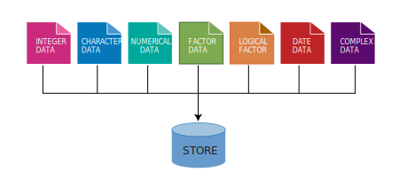

Introduction
R language is a flexible language that allows to work with different kind of data format (R-base?). This include integer, numeric, character, complex, dates and logical. The default data type or class in R is double precision—numeric. In a nutshell, R treats all kind of data into five categories but we deal with only four in this book. Datasets in R are often a combination of seven different data types are highlighted in ?@fig-datatypes;
{# fig-datatypes}
Vectors
Often times we want to store a set of numbers in once place. One way to do this is using the vectors in R. Vector is the most basic data structure in R. It is a sequence of elements of the same data type. if the elements are of different data types, they be coerced to a common type that can accommodate all the elements. Vector are generally created using the c() function widely called concatenate, though depending on the type vector being created, other method. Vectors store several numbers– a set of numbers in one container. let us look on the example below
Notice that the c() function, which is short for concatenate wraps the list of numbers. The c() function combines all numbers together into one container. Notice also that all the individual numbers are separated with a comma. The comma is referred to an an item-delimiter. It allows R to hold each of the numbers separately. This is vital as without the item-delimiter, R will treat a vector as one big, unseperated number.
Numeric
The most common data type in R is numeric. The numeric class holds the set of real numbers — decimal place numbers. We create a numeric vector using a c() function but you can use any function that creates a sequence of numbers. For example, we can create a numeric vector of SST as follows;
We can check whether the variable sst is numeric with is.numeric function
Integer
Integer vector data type is actually a special case of numeric data. Unlike numeric, integer values do not have decimal places.They are commonly used for counting or indexing. Creating an integer vector is similar to numeric vector except that we need to instruct R to treat the data as integer and not numeric or double. To command R creating integer, we specify a suffix L to an element
if your variable does not have decimals, R will automatically set the type as integers instead of numeric.
You can check if the data is integer with is.integer() and can convert numeric value to an integer with as.integer()
You can query the class of the object with the class() to know the class of the object
Although the object bb is integer as confirmed with as.integer() function, the class() ouput the answer as numeric. This is because the defaul type of number in r is numeric. However, you can use the function as.integer() to convert numeric value to integer
Character
In programming terms, we usually call text as string. This often are text data like names. A character vector may contain a single character , a word or a group of words. The elements must be enclosed with a single or double quotations mark.
[1] TRUE[1] "character"We can be sure whether the object is a string with is.character() or check the class of the object with class().
Everything inside "" will be considered as character, no matter if it looks like character or not
Factor
Factor variables are a special case of character variables in the sense that it also contains text. However, factor variables are used when there are a limited number of unique character strings. It often represents a categorical variable. For instance, the gender will usually take on only two values, "female" or "male" (and will be considered as a factor variable) whereas the name will generally have lots of possibilities (and thus will be considered as a character variable). To create a factor variable use the factor() function:
[1] I II III IV V
Levels: I II III IV VTo know the different levels of a factor variable, use levels():
By default, the levels are sorted alphabetically. You can reorder the levels with the argument levels in the factor() function:
Character strings can be converted to factors with as.factor():
text <- c("test1", "test2", "test1", "test1") # create a character vector
class(text) # to know the class[1] "character"[1] "factor"The character strings have been transformed to factors, as shown by its class of the type factor.
Often we wish to take a continuous numerical vector and transform it into a factor. The function cut() takes a vector of numerical data and creates a factor based on your give cut-points. Let us make a fictional total length of 508 bigeye tuna with rnorm() function.
tl.cm = rnorm(n = 508, mean = 40, sd = 18)
# mosaic::plotDist(dist = "norm", mean = 40, sd = 18, under = F, kind = "cdf", add = TRUE)
tl.cm |>
tibble::as.tibble() |>
ggstatsplot::gghistostats(x = value, binwidth = 10, test.value = 40.2, type = "n", normal.curve = T, centrality.type = "p", xlab = "Total length (cm)")We can now breaks the distribution into groups and make a simple plot as shown in ?@fig-lfq, where frequency of bigeye tuna color coded with the group size
Logical
Logical data (or simply logical ) represent the logical TRUE state and the logical FALSE state. Logical variables are the variables in which logical data are stored. Logical variables can assume only two states:
- FALSE, always represent by 0;
- TRUE, always represented by a nonzero object. Usually, the digit 1 is used for TRUE.
We can create logical variables indirectly, through logical operations, such as the result of a comparison between two numbers. These operations return logical values. For example, type the following statement at the R console:
Since 5 is indeed greater than 3, the result of the comparison is true, however, 5 is not less than 3, and hence the comparison is false. The sign > and < are relational operators, returning logical data types as a result.
[1] TRUE[1] "logical"It is also possible to transform logical data into numeric data. After the transformation from logical to numeric with the as.numeric() command, FALSE values equal to 0 and TRUE values equal to 1:
Conversely, numeric data can be converted to logical data, with FALSE for all values equal to 0 and TRUE for all other values.
Date and Time
Date and time are also treated as vector in R
Generating vectors
Sequence Numbers
There are few R operators that are designed for creating vecor of non-random numbers. These functions provide multiple ways for generating sequences of numbers
The colon : operator, explicitly generate regular sequence of numbers between the lower and upper boundary numbers specified. For example, generating number beween 0 and 10, we simply write;
However, if you want to generate a vector of sequence number with specified interval, let say we want to generate number between 0 and 10 with interval of 2, then the seq() function is used
unlike the seq() function and : operator that works with numbers, the rep() function generate sequence of repeated numbers or strings to create a vector
Sequence characters
The rep() function allows to parse each and times arguments. The each argument allows creation of vector that that repeat each element in a vector according to specified number.
[1] "January" "January" "January" "March" "March" "March" "May"
[8] "May" "May" But the times argument repeat the whole vector to specfied times
Generating normal distribution
The central limit theorem that ensure the data is normal distributed is well known to statistician. R has a rnorm() function which makes vector of normal distributed values. For example to generate a vector of 40 sea surface temperature values from a normal distribution with a mean of 25, and standard deviation of 1.58, we simply type this expression in console;
[1] 22.51905 25.80313 24.22628 21.86037 28.99526 24.67710 24.16502 25.47170
[9] 26.88654 25.60199 24.37076 27.22248 24.18528 24.85536 23.85104 25.53450
[17] 25.36971 23.47394 25.31547 23.21039 25.51640 24.39540 25.97264 26.37607
[25] 25.47267 21.68194 24.61381 21.08819 22.96802 26.02830 25.37427 24.85639
[33] 26.26802 26.43708 25.48479 26.23754 24.07334 24.25398 27.26465 25.60898Common task
Rounding off numbers
There are many ways of rounding off numerical number to the nearest integers or specify the number of decimal places. the code block below illustrate the common way to round off:
Number of elements in a vector
Sometimes you may have a long vector and want to know the numbers of elements in the object. R has length() function that allows you to query the vector and print the answer
Data Frame
One of R’s greatest strengths is in manipulating data. One of the primary structures for storing data in R is called a Data Frame. Much of your work in R will be working with and manipulating data frames. Data frames are made up of rows and columns. The top row is a header and describes the contents of each variable. Each row represents an individual measured or observed record. Records can also have names. Each record contains multiple cells of values. Let’s illustrates data frame using historical catch data in the Western Indian Ocean Region from FAO. This dataset is called landings_wio_country.csv and contains some data about total landed catches of ten countries in the WIO region reported in FAO between 1951 and 2015.
country | year | catch |
|---|---|---|
Kenya | 2,015 | 33,080 |
Tanzania | 2,015 | 110,703 |
Zanzibar | 2,015 | 45,972 |
Seychelles | 2,015 | 325,291 |
South Africa | 2,015 | 1,086,810 |
Mozambique | 2,015 | 16,080 |
Somalia | 2,015 | 1,831 |
Mauritius | 2,015 | 16,373 |
Mayotte | 2,015 | 28,936 |
Madagascar | 2,015 | 145,629 |
data.frame is very much like a simple Excel spreadsheet where each column represents a variable type and each row represent observations. A data frame is the most common way of storing data in R and, generally, is the data structure most often used for data analyses. A data frame is a list of equal–length vectors with rows as records and columns as variables. This makes data frames unique in data storing as it can store different classes of objects in each column (i.e. numeric, character, factor, logic, etc).
In this section, we will create data frames and add attributes to data frames. Perhaps the easiest way to create a data frame is to parse vectors in a data.frame() function. For instance, in this case we create a simple data frame dt and assess its internal structure
# create vectors
country = c('Kenya','Mozambique','Seychelles')
weight = c(90, 75, 92)
maturity = c("I", "II", "V")
## use the vectors to make a data frame
dt = data.frame(country, weight, maturity)
## assess the internal structure
str(dt)'data.frame': 3 obs. of 3 variables:
$ country : chr "Kenya" "Mozambique" "Seychelles"
$ weight : num 90 75 92
$ maturity: chr "I" "II" "V"Note how Variable Name in dt was converted to a column of factors . This is because there is a default setting in data.frame() that converts character columns to factors . We can turn this off by setting the stringsAsFactors = FALSE argument:
## use the vectors to make a data frame
df = data.frame(country, weight, maturity, stringsAsFactors = FALSE)
df |> str()'data.frame': 3 obs. of 3 variables:
$ country : chr "Kenya" "Mozambique" "Seychelles"
$ weight : num 90 75 92
$ maturity: chr "I" "II" "V"Now the variable Name is of character class in the data frame. The inherited problem of data frame to convert character columns into a factor is resolved by introduction f advanced data frames called tibble (tibble?), which provides sticker checking and better formating than the traditional data.frame.
## use the vectors to make a tibble
tb = tibble::tibble(country, weight, maturity)
## check the internal structure of the tibble
tb |> dplyr::glimpse()Rows: 3
Columns: 3
$ country <chr> "Kenya", "Mozambique", "Seychelles"
$ weight <dbl> 90, 75, 92
$ maturity <chr> "I", "II", "V"Table 1 show the the data frame created by fusing the two vectors together.
country | weight | maturity |
|---|---|---|
Kenya | 90 | I |
Mozambique | 75 | II |
Seychelles | 92 | V |
Because the columns have meaning and we have given them column names, it is desirable to want to access an element by the name of the column as opposed to the column number.In large Excel spreadsheets I often get annoyed trying to remember which column something was. The $sign and []are used in R to select variable from the data frame.
The FSA package in R has build in dataset that we can use for illustration. For example, ChinookArg dataset contains total length and weight of 112 Chinook salmon collected in three sites in Argentina (Table 2).
tl | w | loc |
|---|---|---|
94.9 | 11.8 | Argentina |
115.0 | 17.2 | Argentina |
120.1 | 17.9 | Argentina |
111.2 | 16.8 | Argentina |
67.7 | 2.4 | Puyehue |
99.4 | 10.2 | Petrohue |
92.2 | 8.3 | Petrohue |
35.4 | 0.5 | Puyehue |
82.9 | 7.8 | Argentina |
57.4 | 1.9 | Puyehue |
86.0 | 6.8 | Petrohue |
71.8 | 3.0 | Puyehue |
Sometimes you may need to create set of values and store them in vectors, then combine the vectors into a data frame. Let us see how this can be done. First create three vectors. One contains id for ten individuals, the second vector hold the time each individual signed in the attendance book and the third vector is the distance of each individual from office. We can concatenate the set of values to make vectors.
vessel.id = c(1,2,3,4,5,6,7,8,9,10)
departure.time = lubridate::ymd_hms(c("2018-11-20 06:35:25 EAT", "2018-11-20 06:52:05 EAT",
"2018-11-20 07:08:45 EAT", "2018-11-20 07:25:25 EAT",
"2018-11-20 07:42:05 EAT", "2018-11-20 07:58:45 EAT",
"2018-11-20 08:15:25 EAT", "2018-11-20 08:32:05 EAT",
"2018-11-20 08:48:45 EAT", "2018-11-20 09:05:25 EAT"), tz = "")
distance.ground = c(20, 85, 45, 69, 42, 52, 6, 45, 36, 7)Once we have the vectors that have the same length dimension, we can use the function data.frame() to combine the the three vectors into one data frame shown in Table 3
vessel.id | date | time | distance.ground |
|---|---|---|---|
1 | 2018-11-20 | 06:35:25 | 20 |
2 | 2018-11-20 | 06:52:05 | 85 |
3 | 2018-11-20 | 07:08:45 | 45 |
4 | 2018-11-20 | 07:25:25 | 69 |
5 | 2018-11-20 | 07:42:05 | 42 |
6 | 2018-11-20 | 07:58:45 | 52 |
7 | 2018-11-20 | 08:15:25 | 6 |
8 | 2018-11-20 | 08:32:05 | 45 |
9 | 2018-11-20 | 08:48:45 | 36 |
10 | 2018-11-20 | 09:05:25 | 7 |